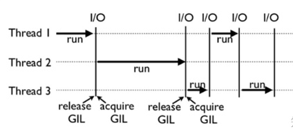

个人简介： wedo实验君, 数据分析师；热爱生活，热爱写作
进程（Process）是应用程序启动的实例，拥有代码、数据和文件和独立的内存空间，是操作系统最小资源管理单元。每个进程下面有一个或者多个线程（Thread），来负责执行程序的计算，是最小的执行单元。
重点是：操作系统会负责进程的资源的分配；控制权主要在操作系统。
另一方面，线程做为任务的执行单元，有新建、可运行runnable（调用start方法，进入调度池，等待获取cpu使用权）、运行running（得到cpu使用权开始执行程序） 阻塞blocked（放弃了cpu 使用权，再次等待） 死亡dead5中不同的状态。线程的转态也是由操作系统进行控制。线程如果存在资源共享的情况下，就需要加锁，比如生产者和消费者模式，生产者生产数据多共享队列，消费者从共享队列中消费数据。
线程和进程在得到和放弃cpu使用权时，cpu使用权的切换都需损耗性能，因为某个线程为了能够在再次获得cpu使用权时能继续执行任务，必须记住上一次执行的所有状态。另外线程还有锁的问题。
并行和并发，听起来都像是同时执行不同的任务。但是这个同时的含义是不一样的。
上面说的多核cpu可能同时执行，这里的可能是和操作系统调度有关，如果操作系统调度到同一个cpu，那就需要cpu进行上下文切换。当然多核情况下，操作系统调度会尽可能考虑不同cpu。
这里的上下文切换可以理解为需要保留不同执行任务的状态和数据。所有的并发处理都有排队等候，唤醒，执行至少三个这样的步骤
我们知道线程的提出是为了能够在多核cpu的情况下，达到并行的目的。而且线程的执行完全是操作系统控制的。而协程（Coroutine）是线程下的，控制权在于用户，本质是为了能让多组过程能不独自占用完所有资源，在一个线程内交叉执行，达到高并发的目的。
协程的优势：
协程和线程区别：
我们姑且也过一遍这些文字上的概念，show your code的时候再联系起来，就会更清晰的。
python中的线程由于历史原因，即使在多核cpu的情况下并不能达真正的并行。这个原因就是全局解释器锁GIL（global interpreter lock），准确的说GIL不是python的特性，而是cpython引入的一个概念。cpython解释器在解析多线程时，会上GIL锁，保证同一时刻只有一个线程获取CPU使用权。
考虑下如果有两个线程A和B同时引用一个对象obj，这个时候obj的引用计数为2；A打算撤销对obj的引用，完成第一步时引用计数减去1时，这时发生了线程切换，A挂起等待，还没执行销毁对象操作。B进入运行状态，这个时候B也对obj撤销引用，并完成引用计数减1，销毁对象，这个时候obj的引用数为0，释放内存。如果此时A重新唤醒，要继续销毁对象，可是这个时候已经没有对象了。 所以为了保证不出现数据污染，才引入GIL。
每个线程使用前都会去获取GIL权限，使用完释放GIL权限。释放线程的时机由python的另一个机制check_interval来决定。
在多核cpu时，因为需要获取和释放GIL锁，会存在性能上额外的损耗。特别是由于调度控制的原因，比如一个线程释放了锁，调度接着又分配cpu资源给同一个线程，该线程发起申请时，又重新获得GIL，而其他线程实际上都在等待，白白浪费了申请和释放锁的操作耗时。
python中的线程比较适合I/O密集型的操作（磁盘IO或者网络IO）。

import os
import time
import sys
from concurrent import futures
def to_do(info):
for i in range(100000000):
pass
return info[0]
MAX_WORKERS = 10
param_list = []
for i in range(5):
param_list.append(('text%s' % i, 'info%s' % i))
workers = min(MAX_WORKERS, len(param_list))
# with 默认会等所有任务都完成才返回，所以这里会阻塞
with futures.ThreadPoolExecutor(workers) as executor:
results = executor.map(to_do, sorted(param_list))
# 打印所有
for result in results:
print(result)
# 非阻塞的方式，适合不需要返回结果的情况
workers = min(MAX_WORKERS, len(param_list))
executor = futures.ThreadPoolExecutor(workers)
results = []
for idx, param in enumerate(param_list):
result = executor.submit(to_do, param)
results.append(result)
print('result %s' % idx)
# 手动等待所有任务完成
executor.shutdown()
print('='*10)
for result in results:
print(result.result())
python提供的multiprocessing包来规避GIL的缺点，实现在多核cpu上并行的目的。multiprocessing还提供进程之间数据和内存共享的机制。这里介绍的concurrent.futures的实现。 用法和线程基本一样，ThreadPoolExecutor改成ProcessPoolExecutor
import os
import time
import sys
from concurrent import futures
def to_do(info):
for i in range(10000000):
pass
return info[0]
start_time = time.time()
MAX_WORKERS = 10
param_list = []
for i in range(5):
param_list.append(('text%s' % i, 'info%s' % i))
workers = min(MAX_WORKERS, len(param_list))
# with 默认会等所有任务都完成才返回，所以这里会阻塞
with futures.ProcessPoolExecutor(workers) as executor:
results = executor.map(to_do, sorted(param_list))
# 打印所有
for result in results:
print(result)
print(time.time()-start_time)
# 耗时0.3704512119293213s， 而线程版本需要14.935384511947632s
我们先来看下python是怎么实现协程的。 答案是yield。 以下例子的功能是实现计算移动平均数
from collections import namedtuple
Result = namedtuple('Result', 'count average')
# 协程函数
def averager():
total = 0.0
count = 0
average = None
while True:
term = yield None # 暂停，等待主程序传入数据唤醒
if term is None:
break # 决定是否退出
total += term
count += 1
average = total/count # 累计状态，包括上一次的状态
return Result(count, average)
# 协程的触发
coro_avg = averager()
# 预激活协程
next(coro_avg)
# 调用者给协程提供数据
coro_avg.send(10)
coro_avg.send(30)
coro_avg.send(6.5)
try:
coro_avg.send(None)
except StopIteration as exc: # 执行完成，会抛出StopIteration异常，返回值包含在异常的属性value里
result = exc.value
print(result)
yield关键字有两个含义：产出和让步; 把yield的右边的值产出给调用方，同时做出让步，暂停执行，让程序继续执行。
上面的例子可知
我们来回顾下1.3中协程的概念：本质是为了能让多组过程能不独自占用完所有资源，在一个线程内交叉执行，达到高并发的目的。。 上面的例子怎么解释呢？
asyncio即异步I/O, 如在高并发（如百万并发）网络请求。异步I/O即你发起一个I/O操作不必等待执行结束，可以做其他事情。asyncio底层是协程的方式来实现的。
我们先来看一个例子，了解下asyncio的五脏六腑。
import time
import asyncio
now = lambda : time.time()
# async定义协程
async def do_some_work(x):
print("waiting:",x)
# await挂起阻塞， 相当于yield， 通常是耗时操作
await asyncio.sleep(x)
return "Done after {}s".format(x)
# 回调函数，和yield产出类似功能
def callback(future):
print("callback:",future.result())
start = now()
tasks = []
for i in range(1, 4):
# 定义多个协程，同时预激活
coroutine = do_some_work(i)
task = asyncio.ensure_future(coroutine)
task.add_done_callback(callback)
tasks.append(task)
# 定一个循环事件列表，把任务协程放在里面，
loop = asyncio.get_event_loop()
try:
# 异步执行协程，直到所有操作都完成， 也可以通过asyncio.gather来收集多个任务
loop.run_until_complete(asyncio.wait(tasks))
for task in tasks:
print("Task ret:",task.result())
except KeyboardInterrupt as e: # 协程任务的状态控制
print(asyncio.Task.all_tasks())
for task in asyncio.Task.all_tasks():
print(task.cancel())
loop.stop()
loop.run_forever()
finally:
loop.close()
print("Time:", now()-start)
上面涉及到的几个概念：
asyncio通过事件的方式帮我们实现了协程调用方的控制权处理，包括send给协程数据等。我们只要通过async定义协程，await定义阻塞，然后封装成future的task，放入循环的事件列表中，就等着返回数据。再来看一个http下载的例子，比如你想下载5个不同的url（同样的，你想接收外部的百万的请求）
import time
import asyncio
from aiohttp import ClientSession
tasks = []
url = "https://www.baidu.com/{}"
async def hello(url):
async with ClientSession() as session:
async with session.get(url) as response:
response = await response.read()
# print(response)
print('Hello World:%s' % time.time())
if __name__ == '__main__':
loop = asyncio.get_event_loop()
for i in range(5):
task = asyncio.ensure_future(hello(url.format(i)))
tasks.append(task)
loop.run_until_complete(asyncio.wait(tasks))
本文分享关于python协程的概念和asyncio包的初步使用情况，同时也介绍了基本的相关概念，如进程、线程、并发、并行等。希望对你有帮助，欢迎交流（@mintel）。简要总结如下：